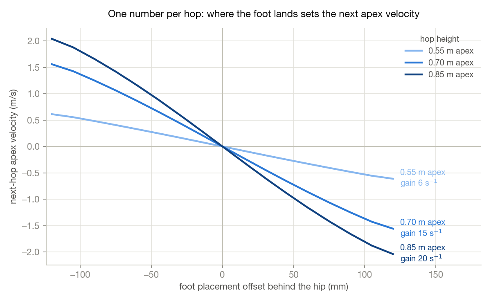

Teaching the Hopper Where to Put Its Foot
Last time the hopper was a set of promising plots: a variable-pitch screw, a motor that can throw 900 grams several meters upward, and a circuit board that assumes the robot is trying to misbehave. This post is about what happened between the plots and the machine shop: making the thing hop, steer, and land without drama—in simulation, where crashes are free.
Simulation-first deserves one sentence of defense. Everything below runs under a hardware-realistic sensor model—quantized encoders, a noisy IMU, about a millisecond and a half of latency, a 1 kHz loop—and the C++ port for the Teensy replays a 16,000-tick episode to within a trillionth of the Python controller's outputs. None of this has touched a real floor yet, but the controller being tuned here is, tick for tick, the one that will.
Balancing on a corner
The last post steered with a mixed set: a big inertial tail for pitch and two reaction wheels for roll and yaw. It works, but the tail is a propeller-sized part with its own motor sizing, and every asymmetric mass hanging off the body is one more thing pulling the center of mass off the leg axis.
The replacement is three identical wheels arranged like the Cubli balancing on its corner: each spin axis tilted about 54.7 degrees off the leg, spaced 120 degrees apart. That particular angle makes the three axes mutually orthogonal, so the matrix built from them is orthonormal and its inverse is just its transpose. The attitude controller did not change at all—it still commands virtual pitch, roll, and yaw wheels, and a small allocator multiplies by a transpose to get physical motor torques. The controller does not know the tail is gone. The symmetry also puts the center of mass back on the leg axis by construction, and the shopping list drops to one wheel motor SKU.
The triad is not free. A pure pitch command now splits across two tilted wheels at 0.71 of full strength each, and the momentum stored in the wheels lives on tilted axes too—so when the body rotates, that stored momentum shows up as a gyroscopic disturbance torque. That one killed sustained sideways hopping above about 0.35 m/s until the allocator learned to compute the cross product from wheel telemetry and cancel it explicitly.
The more surprising lesson was mechanical. What keeps the triad stable is wheel inertia, not motor torque. A solid-disk wheel fell over; a rim-loaded wheel of exactly the same mass—a ring stores roughly twice the inertia per gram—hops all afternoon. The wheel spec that came out of this is a 42-gram rim at 45 mm radius per wheel, 0.55 N·m and about 700 rad/s at the motor. Where the mass sits mattered more than how much of it there is.
One number per hop
A hopper's locomotion interface is unusually honest. Once the foot is on the ground, physics mostly happens to you; the real decision is made in flight, and it is a single number per hop: where the foot lands relative to the hip.
The classic way to pick that number is Raibert's heuristic—place the foot at half the stance travel plus a gain times the velocity error. It works, and it is what got this robot hopping in the first place. But measured on this plant it only removes about 20% of a velocity error per hop, so a shove takes a long, wandering while to die out.
The better answer comes from Salto-1P: measure the apex-to-apex return map of your actual robot—vault dynamics, cam profile, damping and all—and invert it at runtime. Given the velocity you have and the velocity you want at the next apex, solve the map for the foot offset that gets you there. One hop, done. The map comes from simulation probes, which is exactly the kind of thing you can afford when your robot is already a simulation.

Two details turned out to matter more than the idea itself. First, probe the map from the warm gait: settle into the limit cycle for at least six hops before measuring. Cold-start probes overestimate the placement gain by a factor of 2.2, and a controller built on the cold map diverges exactly when you leant on it. Second, the map depends on hop height—the gain swing above—so there is one map per energy level and the controller interpolates.
At runtime the controller aims to remove 90% of the error each hop rather than 100%—a little damping buys robustness—and a slow per-hop integrator nulls whatever model bias remains. The triad needed the gain backed off further still (0.8 to 0.6); with the crisper wheels it over-drove itself into a growing side-to-side oscillation before the retune. The result is worth the fuss: a 0.3 m/s shove is gone by the next apex, and hopping in place holds station within about a decimeter under the full noise model.

The soft part of the screw is not the soft part
Stock landings measured 8.6 g of sustained deceleration. Fine for a simulation, unkind to bearings, boards, and grooves. I wanted softer, and the obvious idea was mechanical: reshape the top of the groove into a low-pitch shelf, so the leg touches down "on the soft part of the screw."
Measured, the soft shelf landed harder: 23 g against 9.5. The villain is reflected rotor inertia, which goes as the rotor inertia divided by the transmission ratio squared. On a 5.5 mm/rad shelf the rotor shows up at the foot as roughly 455 grams of equivalent mass slamming through the groove; on the stock high-pitch top it is about 70. The shelf also caps how fast the motor can pay out leg near takeoff, gutting the maximum jump from 3.0 to 1.3 meters. The groove was already the right shape. Softness is a property of the stance law, not the mechanism.
So the soft landing shipped as a controller mode. Ride the catch deeper—135 mm of travel instead of 74—and drop the damping that caused the touchdown spike. The damping has to be asymmetric: firm while the leg compresses, light while it extends, because symmetric damping quietly taxes the push until the hop starves and the controller thrashes into its firm rescue mode. A separate light damper holds the leg during flight so it is fully re-extended at touchdown. Landings now measure 5.7 g sustained, and the firm-rescue rate went from more than half of all hops to essentially zero.
One more honest hack: the springy liftoff plus sensor latency makes the takeoff regulator overshoot the apex by a systematic tenth of a meter, and no integrator can fix it because the integrator reads the same biased estimate. It is calibrated out as a fixed offset, the way a real robot would do it.
The soft stance cannot be the only stance—held that long, pitch runs away above about 0.3 m/s—so the controller switches per hop at apex: soft when asked to stay put, stock stiffness when asked to move. Even the switch had teeth. It has to key on the user's command, not the controller's internal velocity plan, because station-keeping corrections sit right inside any reasonable hysteresis band and toggle the mode on every drift fix; the robot visibly stumbled until that changed. And the apex calibration has to ramp in over a few hops, or every mode change steps the hop height by ten centimeters.
Guard rails
Underneath all of it runs a safety supervisor in the control-barrier-function style, using only encoder signals: it continuously checks that the stopping energy available in the remaining stroke covers the kinetic energy coming in, and clips the motor command when the margin thins. Across every seeded run so far, the leg has never been driven past 85% of its stroke. The same arithmetic caps commanded jump heights at what a landing can actually absorb—around four to five meters with this drive—which is the number that matters, because a jump you cannot catch is just a crash with good hang time.
What comes next
The hardware plan from last time stands—machine the screw, bring up the board, constrained leg tests before free hops. The controls work adds two items to it:
- Pick the triad wheel motor and build the rim wheels to the spec the simulation converged on.
- Re-measure the deadbeat maps against the real leg on the bench, the same warm-gait way, before trusting them on the floor.
The simulated robot now hops in place indefinitely, shrugs off shoves in one hop, and lands at two-thirds of the deceleration it used to. The next fall it takes should be on real concrete, for a much better class of reason.
Comments
No comments yet. Email is the comment section for now.